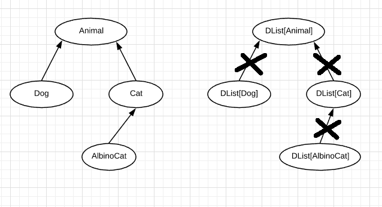
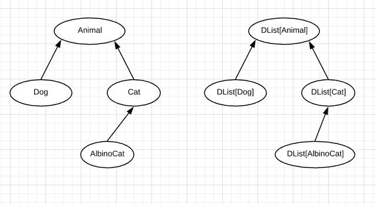
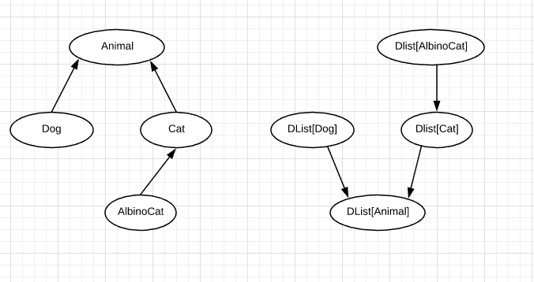

Система типов в Scala
Что такое тип?
Scala:
val x: Int = 1
Java:
Integer x = 1;
C#:
int i = 1;
Типы в языках
Тип это некоторое ограничение, накладываемое на какое-то значение и на то как это значение может использоваться.
val a: Int = 1
a > 1
a = false
val b: Boolean = false
b || true
b > 1
b.someMethod()
Система типов
Система типов в языке - это набор базовых типов, правила и механизмы по описанию новых типов и по применению различных типов.
Виды систем типов
- Время проверки правил
- Статические
- Динамические
- Строгость правил
- Статические
- Динамические
Виды систем типов

Виды систем типов
Статическая/динамическая типизация
- Статические - те которые осуществляют проверку типов во время компиляции.
Примеры: Java, C#, TypeScript, C/C++, Rust, Scala и др.
- Динамические - те которые проверяют непосредственно при работе программы.
Примеры: JavaScript, Python, PHP, Ruby, Perl, Clojure и др.
Виды систем типов
Статическая/динамическая типизация
(scala.Dynamic)
(JavaScript - Flow, Python - PEP 484 introduced type hints)
Виды систем типов
Слабая/сильная типизация
Виды систем типов
Что лучше..?
Виды систем типов
Что лучше?
Большинство программистов считают что в большинстве случаев лучше язык со статической и строгой типизацией при разработке программ
Ниша динамических и/или слабо типизированных языков - небольших и простые приложения (скрипты, примитивные приложения, обучение)
Виды систем типов
Статическая строгая типизация
Проблемы для языка:
Проблемы для разработчика:
Виды систем типов
Статическая строгая типизация
Решение проблем разработчиков в Scala:
(однако создателям библиотек приходиться попотеть)
((также как и создателям языка))
Система типов в Scala
Система типов в Scala
Вывод типов
По простому - там где типы могут быть однозначно просчитаны компилятором - их можно не писать
Система типов в Scala
Вывод типов
Пример:
val x = "Hello world" // val x: String
def someFunction() = 42 // def someFunction(): Int
val y = {
if(randomBoolean) {
Cat // наследует Animal
} else {
Dog // наследует Animal
}
}
// val y: Animal
Система типов в Scala
Гибко и удобно использовать систему типов позволяет полиморфизм
Что такое полиморфизм..?
Система типов в Scala
Полиморфизм
Принципиальная возможность для одного и того же кода обрабатывать данные разных типов
Зачастую ставятся определенные условия, которым должны соответствовать типы
В каждом конкретном языке - набор отдельных фич которые дают ту или иную степерь полиморфизма
Полиморфизм
Виды
(subtyping | наследование)
(generics)
(перегрузка функций/операторов, авто приведение типов Int -> Long, в scala - implicit conversion, pattern typeclass)
Полиморфизм подтипов
Полиморфизм подтипов
Полиморфизм подтипов
Liskov Substitution Principle
// для обозначения подтипа в Scala используется "<:"
// Subtype <: Supertype
class Animal
class Cat extends Animal
// Cat <: Animal
class Dog extends Animal
// Dog <: Animal
def foo(x: Animal) = ???
foo(new Cat()) // OK if Cat <: Animal
foo(new Dog()) // OK if Dog <: Animal
foo("Hello world") // compile error
Полиморфизм подтипов
Liskov Substitution Principle
Формально:если для некоторого типа A выполняется какое-то правило
foo(A.value) == OK
то тогда для любого типа B, являющегося подтипом типа A
B <: A
также должно выполняться это правило
foo(B.value) == OK
Полиморфизм подтипов
Иерархия

Полиморфизм подтипов
Any - надтип (supertype) всех типов в Scala
Использование:
def foo(x: Any) = ???
val a = if (randomBoolean) {
"Hello world"
} else {
42
}
// val a: Any - Почему..?
Полиморфизм подтипов
AnyVal - тип оберток над значениями
Компилятор с такими типами обходится по особенному - стремится оптимизировать так чтобы обертка не создавала реальный объект в памяти
Использование:Полиморфизм подтипов
Unit
Полиморфизм подтипов
Переходим к AnyRef
Полиморфизм подтипов
AnyRef - надтип для всех остальных типов данных, т.е. для всех ссылочных типов.
Использование:
Полиморфизм подтипов
Null - подтип для всех подтипов AnyRef.
Т.е. для любого X <: AnyRef справедливо Null <: X
Это делается автоматически на уровне компилятора
Полиморфизм подтипов
Null
val a = if (randomBoolean) {
"Hello world" // String
} else {
null // Null
}
// val a: String - потому что Null <: String
Полиморфизм подтипов
Полиморфизм подтипов
Nothing
val a = if (randomBoolean) {
42 // Int
} else {
??? // Nothing
}
// val a: Int - потому что Nothing <: Int
Полиморфизм подтипов
Подведем итоги
Полиморфизм подтипов
Полиморфизм подтипов (subtyping) - имеет пересечения и взаимодействие с другими видами полиморфизма.
Точнее ряд фич системы типов Scala, которые относятся к полиморфизмам другого типа, учитывают правила которые справедливы для подтипов
Парам. полиморфизм
def someMethod[T](x: T) = ???
class List[A] {
def add(a: A) = ???
}
Парам. полиморфизм
является ли List[A] - типом?
Парам. полиморфизм
является ли List[A] типом? - Нет
Нельзя задать переменную с типом List[A]:
val x: List[A] // compile error
Можно задать переменную с типом, сконструированным с помощью дженерика:6
val x: List[Int] // OK - тип списка интов
Парам. полиморфизм
List[A] - задает как бы семейство или множество типов различных типов
Можно на дженерик также смотреть как на конструктор типа
допустим у нас есть некий тип X и мы с помощью такого конструктора List[_] можем сконструировать тип List[X]
Пример: берем тип Int, берем конструктор типа List[_] - конструируем конкретный тип List[Int]
Парам. полиморфизм
Где в иерархии подтипов находятся List[A] ?
Парам. полиморфизм
Имеют ли между собой отношения подтипов разные типы семейства типов List[A]?
// если Int <: Any то можно ли сказать что List[Int] <: List[Any]
val x: List[Int]
val a: List[Any] = x // OK?
Парам. полиморфизм
Имеют ли между собой отношения подтипов разные типы семейства типов List[A]?
Нет
Парам. полиморфизм
Подобные отношения среди типов одного семейства называются вариантностью
Парам. полиморфизм
Ковариантный (covariance) - Producer[+A]
Парам. полиморфизм
Контравариантный (contravariance) - Consumer[-A]
